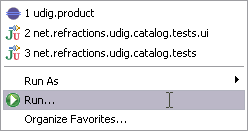
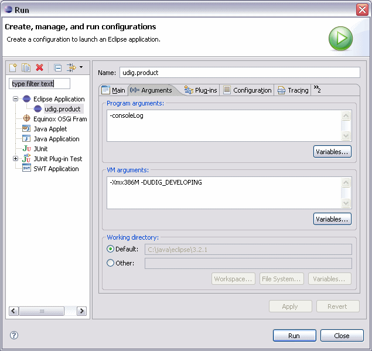

Q: How can I avoid startup dialogs when developing?
A: Before launching uDig from your eclipse workspace, modify the run configuration from the "Run..." menu item as shown below.

On the Arguments tab, add "-DUDIG_DEVELOPING" to your VM arguments.

Now when you clear your workspace and launch uDig, you won't have to close the tips dialog nor navigate from the intro screen to the workbench.
(c) Copyright (c) 2004-2008 Refractions Research Inc. and others.